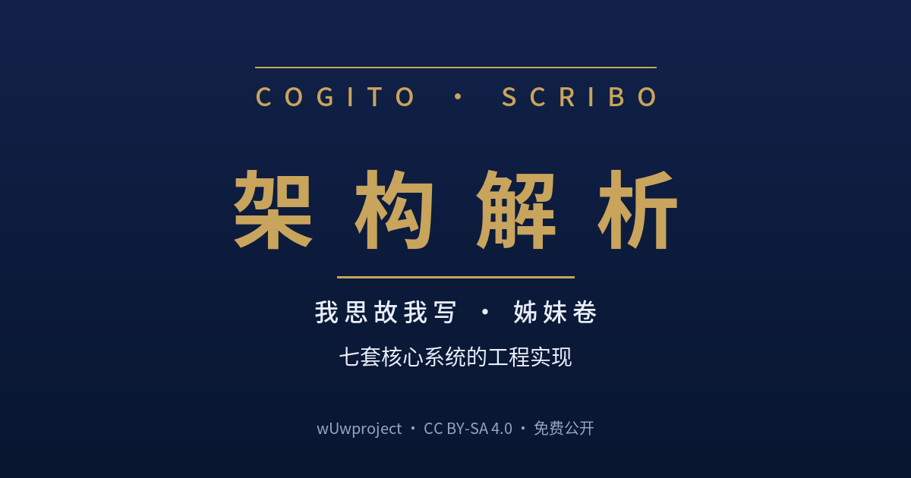

七套核心系统的工程实现（母书《我思故我写》姊妹卷）

母书《我思故我写》回答"为什么"——方法论、原则与边界；本册回答"怎么做"——七套核心系统的工程实现：模块划分、执行链路、配置体系与关键机制。两册互为表里，独立成卷、独立版本。
成熟架构 5 篇：skill-standardization（标准化审计引擎）/ semantic-split（语义拆分）/ activity-duration-estimation（活动历时估算）/ rag-assistant（领域智能体）/ structured-writer（结构化写作引擎）；实验性架构 2 篇：orchestrator（第 I 代编排器）/ silprespec-orchestrator（第 II 代前置规范编排器）；演进收束篇 1 篇：《技能编排器到 agent 编排器——编排对象迁移与"圈"的 z 轴》（架构 08，以编排器两代为标本的论述篇，非系统）。另含导读（方法论↔架构映射 + 七系统关系总览 + 演进收束篇定位）、附录 A 统一术语表（与母书口径一致）、附录 B 运行速查。
本册整体采用 CC BY-SA 4.0（署名-相同方式共享）——可自由复制、分发、演绎，须注明作者 wUwproject 并按相同协议共享。